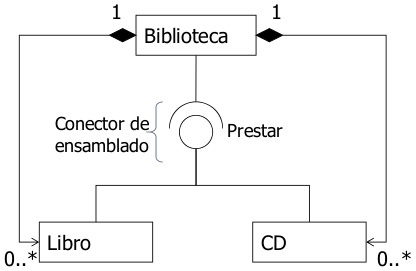
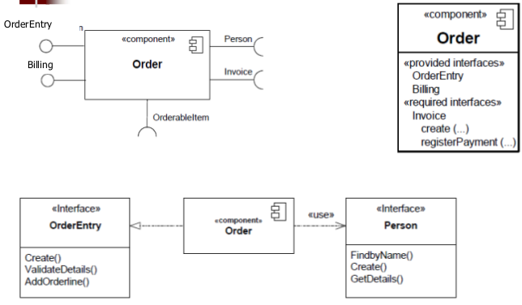
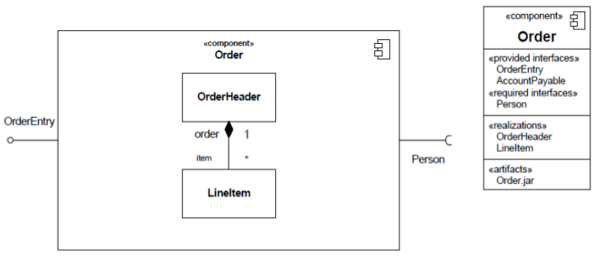
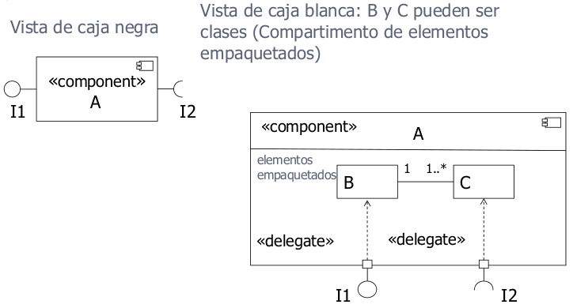
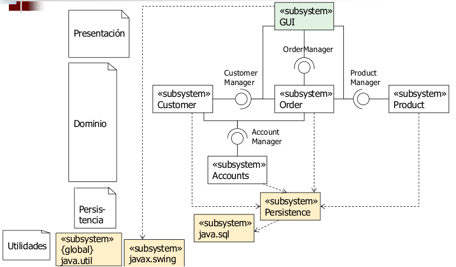
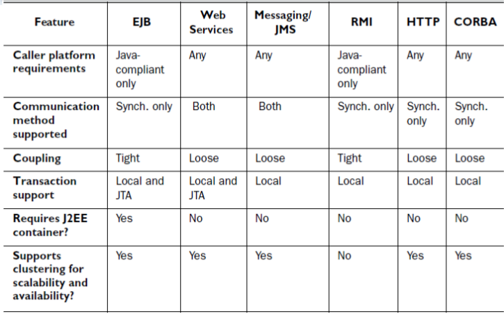

4. Ingeniería del Software basada en componentes
4.1 Especificación de componentes con UML
Un componente representa una parte modular del un sistema que encapsula su contenido y cuya manifestación es reemplazable dentro de su entorno. Se ve como una caja negra cuyo comportamiento está completamente definido por sus interfaces proporcionadas y requeridas, y puede ser sustituido por otros componentes que proporcionen el mismo protocolo.
Los componentes pueden ser físicos (instanciados directamente en tiempo de ejecución como un EJB) o lógicos (una construcción lógica como un subsistema, que solo se instancia indirectamente al instanciar sus partes).
Intefaz proporcionada: la interfaz que implementa el componente. Ofrece sus servicios.

Interfaz requerida: indica que el componente utiliza los servicios definidos por la interfaz.

Conectores de ensamblado: conexión entre ambos tipos de interfaz.

Representaciones de caja negra:

Representaciones de caja blanca:

Un puerto especifica un punto de interacción entre un clasificador y su entorno. Se describe por sus interfaces proporcionadas y requeridas. Es un conjunto semánticamente cohesivo de interfaces, y puede tener un nombre.

Estructura interna
Internamente, un componente puede realizarse con clases o descomponerse en otros componentes. Las interfaces delegan en las partes internas, pudiendo mostrar los elementos anidados, conectados a él por relaciones de dependencia.
Se pueden mostrar clases que realizan el componente (compartimento de elementos empaquetados) o componentes internos (compartimento de estructura interna) con sus partes y conectores.

4.1.1 Partición: subsistemas como componentes
El sistema se divide en subsistemas, que se dividen en módulos, que se dividen en sucesivos niveles de componentes que finalmente se implementan con clases y objetos.
Un subsistema es un componente que actúa como unidad de descomposición de un sistema para dividirlo en porciones manejables. Es un paquete UML. Se agrupan en el mismo subsistema las clases o componentes que se encuentrar en el mismo área de interés, pertenecen a la misma jerarquía, comparten casos de uso o están asociadas fuertemente.
No se puede instanciar un subsistema en tiempo de ejecución pero sí se pueden instanciar sus partes contenidas, y conectarse a otros subsistemas a través de interfaces para crear una arquitectura.
Una arquitectura física está formada por subsistemas e interfaces, con los subsistemas organizados según el patrón arquitectónico de capas. Cada capa contiene subsistemas de diseño: capa de presentación, de dominio, de servicios, de utilidades, etc. Las dependencias entre capas se definen cuidadosamente, van en una sola dirección y siempre a través de interfaces.

Es conveniente dividr el modelo que representa todo el dominio. Por ello, organizamos un paquete con los elementos comunes como subsistema y el resto de paquetes como subsistemas.
La interfaz de usuario se comunica con un controlador de fachada, aplicando el patrón fachada. Para aplicar este patrón, se identifican las partes cohesivas del sistema, se empaquetan en un subsistema y se define una interfaz para interactura con ese subsistema. Las dependencias entre subsistemas se pueden implementar con conectores.
4.2 Diseño de componentes con JEE
En JSP se usa MVC, con JavaBean como modelo.
En JEE se diseñan los componentes en varias capas. Se parte de la especificación de los componentes en UML. Después se diseñan éstos en capas, se diseña la arquitectura de red, se programan y se realizan las pruebas unitarias.
En JEE existen las siguientes capas:
- Capa de presentación: controla lo que se muestra al usuario final.
- Capa de despliegue: publica las operaciones de las clases de dominio.
- Capa de dominio: procesa la lógica y las reglas de negocio a través de clases de dominio u objetos de negocio. Junto con la capa de despliegue, implementa la lógica de negocio.
- Capa de acceso a datos: gestiona la lectura, escritura, actualización y borrado de los datos almacenados. Podría funcionar con JDBC/JPA pero también con XML o ficheros.
- Capa de componentes arquitectónicos: componentes genéricos que pueden usarse en todas las capas.
- Capa de objetos de transferencia de datos: estructuras de información ligeras (DTOs) relacionadas con las clases de dominio usadas para compartir información a través de las capas.
Capa de acceso a datos
Se implementa mediante clases de tipo Data Access Objects (DAO) u otro patrón equivalente. Gestiona el acceso al almacenamiento persistente independientemente del tipo que sea. El acceso a datos independiente permite cambiar las fuentes de datos y compartir el acceso a datos entre distintas aplicaciones.
Lógica de negocio
Capa de dominio
Proviene de las clases del dominio y las reglas de negocio. Las clases de dominio deberían estar separadas de las capas DAO y de despliegue para maximizar sus posibilidades de reutilización.
Suele utilizar y coordinar varios DAOs. Suele usar patrones como adaptador, compuesto, estrategia, etc.
Capa de despliegue
Es específica de la arquitectura JEE. Incluye los EJBs de mensaje y sesión y/o los servicios web necesarios. Se puede tener un servicio web y un EJB para la misma capa de dominio.
Tipos de despliegue

Si la clase de dominio se usa por páginas HTML dinámicas, servlets o JSP, se pueden aislar con algún tipo de despliegue en lugar de ser utilizados directamente por la capa de presentación. Suele implementarse con un EJB de sesión.
Si la clase de dominio requiere soporte de transacciones (requiere JTA, proporcionado por contenedores JEE), se puede implementar con un EJB de sesión "stateful".
Si la clase de dominio recibe y procesa mensajes JMS, se implementa con un EJB de mensaje.
Si la clase de domino es invocada desde aplicaciones no Java, se puede implementar como servicio web.
Capa de presentación
Es la sección de la aplicación responsable de todo lo que los usuarios finales ven físicamente en la interfaz de usuario. JEE soporta interfaces HTML/Javascript, y produce interfaces HTML usando una combinación de páginas HTML estáticas y dinámicas, generadas por sevlets y JSP. Puede estar en una máquina distinta del contenedor JEE (interfaz remota).
Capas auxiliares
Capas de objetos de transferencia de datos (data transfer objects). Son estructuras de datos útiles. En UML se indican con el estereotipo <<DataType>>. Se conoce como patron DTO.
Capa de componentes arquitectónicos: componentes de terceros, utilidades comunes, etc.
Proceso de desarrollo: tareas de diseño
Fases previas:
- Casos de uso y modelo de dominio.
- Diagramas de secuencia y máquinas de estado.
Capas y clases de diseño de cada componente (arqitectura estándar JEE): de cada clase del dominio se derivan varias, una por cada capa (...Manager, ..., ...DAO, ...DTO). Se utilizan interfaces, especialmente para los EJB. Los métodos derivan de las operaciones del dominio y se incorporan a todas o parte de las clases de diseño.
Algunas recomendaciones y consejos son:
- Pedir y devolver estructuras de datos (DTO) en lugar de atributos individuales para aumentar el rendimiento.
- Documentar cada clase del dominio como un bloque en lugar de dividirlo en sus tres o cuatro componentes (EJB, DAO, DTO, etc.).
- Todos los atributos documentados tienen que tener getters y setters.
- No es necesario detallar los modelos completos con UML, puesto que las herramientas lo hacen mejor.
- Se puede automatizar el acceso a datos mediante JPA y simplificar las capas de dominio y DTO.
Arquitectura de la red
El arquitecto es responsable de asegurarse de que las aplicaciones cumplan con la infraestructura de seguridad de la empresa, de la escalabilidad (capacidad de la aplicación de manejar un número cada vez mayor de usuarios) y de la disponibilidad (una aplicación con alta disponibilidad es aquella que está siempre disponible para su uso y tiene un mínimo tiempo de inactividad) de las aplicaciones.
Seguridad
En la mayoría de las empresas, la seguridad está centralizada y se trata como una cuestión de infraestructura. Por tanto, hay que aprovechar la infraestructura de seguridad tanto como sea posible, y hay ue auditar el uso de identificadores genéricos por problemas de acceso a la base de datos.
4.3 Diseño de las capas
4.3.1 Patrón DTO
Con este patrón se diseña una de las capas transversales de la arquitectura. Resuelve el problema de cómo permitir a un cliente intercambiar datos con el servidor sin hacer múltiples llamadas de red de grano fino preguntando por cada dato.
DTO lo resuelve transfiriendo un objeto ligero al cliente con todos los datos necesarios. Después, el cliente puede hacer peticiones locales al objeto que ha recibido.
Para ello, se crean clases Java que encapsulan los datos en un paquete transportable por la red (implementan java.io.Serializable).
Una clase DTO es una clase ligera que representa una estructura de datos (<<datatype>> en UML) e implementa java.io.Serializable. Se usa en todas las capas de la aplicación. Se elige esta solución por resolver el problema de eficiencia descrito anteriormente.
Es recomendable rellenar siempre todos los campos del DTO para evitar errores NullPointerException (puede ser mejor una cadena vacía), hacer que los DTOs sean autodescriptivos, usar arrays o colecciones de DTOs cuando sea necesario, y considerar métodos que redefinan equals().
Hay dos variantes. Podemos usar DTOs personalizados que representan parte de un bean o agrupan varios beans, o bien podemos usar DTOs de dominio denominados "entities". Al usar patrón fachada, una clase de dominio no es accesible directamente por el cliente. Por esa razón, se hacen copias DTO de los objetos de dominio del servidor (entities). Los clientes pueden operar sobre copias locales mejorando el rendimiento de las lecturas y actualizaciones.
4.3.2 Patrones de la capa de acceso a datos
Hay varias opciones. Se puede usar el patrón Active Record (los métodos CRUD se incluyen en la clase) y eliminar la capa de acceso a datos pues la clase de dominio maneja directamente el acceso a datos.
Sin embargo, conviene separar el acceso a datos en un paquete independiente. Lo más común es hacerlo a través del patrón DAO/EAO o del patrón Mapper.
Patrón DAO
Requiere un DataSource que representa una base de datos, XML, archivo, etc y un ResultSet que es la respuesta del DataSource. El DAO manipula el resultado para devolver un DTO serializable.
Patrón DAO/JPA o Entity Access Objects (EAO)
Con este patrón, el DTO es una clase tipo Entity JPA. La interfaz del EAO proporciona los métodos para crear, buscar, borrar, etc.
Patrón fachada de acceso a datos
Una clase Entity es un POJO, no un EJB. Se usa un EJB como fachada para acceder a la instancia de la clase entity desde las capas de dominio o despliegue.
Automatización con NetBeans
NetBeans permite automatizar el patrón DAO. Genera la clase @Entity y un EJB de sesión con su interfaz básica CRUD de acceso a datos que actúan como fachada de acceso a datos.
La alternativa es usar el patrón Mapper OR (Objeto-Relacional). Es una opción que ofrece una traducción más directa entre objetos y almacenamiento relacional. Permite que el EJB devuelva instancias de clases del dominio, invirtiendo la dependencia.
La interfaz del mapper nos proporciona los métodos CRUD, haciendo que la clase del dominio no sea un EJB sino un POJO.
4.3.3 Patrones de la capa de negocio
Despliegue: Patrón fachada de sesión
Los EJB de sesión pueden ser utilizados desde distintos clientes (servlets, aplicaciones cliente servidor de escritorio, etc), reduciendo el acoplamiento. Corresponde al controlador de fachada del modelo de análisis, con los métodos de los EJB de sesión correspondiendo con las operaciones de los diagramas de secuencia del sistema. Usar EJB de sesión sin estado (stateless) mejora el rendimiento.
En la capa de despliegue se implementa el patrón fachada de sesión, que es la interfaz para los clientes que conecta con la capa de dominio.
Este patrón resuelve el problema de que un EJB ejecute todas las llamadas involucradas en un caso de uso a partir de una única petición de red desde el cliente. Esta fachada se implementa con un Session EJB.
Otra alternativa es usar el patrón comando EJB, que implementa una solución más ligera y suele usarse en frameworks. En este caso, se crea una clase que representa un comando. A través de llamadas desde el servlet a una instancia de esa clase se configura el comando para después ordenar que se ejecute y una vez ejecutado, obtener los resultados.
Dominio: Patrones Domain Model y Transaction Script
Si necesito una transacción que involucra a varias clases, como la creación de un pedido con líneas de detalle, la lógica no puede limitarse a una única clase/EJB.
En la capa de dominio se usan los patrones Domain Model o Transaction Script.
Domain Model reparte el modelo de análisis entre la capa de despliegue (EJBs fachada de sesión) y la capa de dominio (clases del dominio). Es más adecuado para clases con un comportamiento complejo. Refleja directamente el modelo de análisis (las clases de análisis y los diagramas de secuencia). En este caso, una clase Usuario <<entity>> en la capa DTO no tiene operaciones (solo getters y setters) ni puede autogestionar el acceso a datos, y las operaciones del modelo de análisis estarían en una clase Usuario <<domain>> dentro de la capa de dominio.
Transaction Script es más adecuado para clases con un comportamiento muy sencillo. El comportamiento se traslada a los EJB de sesión y la capa de dominio se integra en la de despliegue.
4.3.4 Patrones de la capa de presentación: MVC
En la capa de presentación se usa MVC en alguna de sus variantes, con EJBs y servicios web como modelo, servlets como controlador, y JSP para la vista. Se usan las clases "Entity" como DTOs y también JavaBeans, para simplificar la presentación en los JSP.
Al implementar, no se debe inyectar un EJB Stateful en un Servlet porque los servlets son compartidos.
Para usar EJBs de sesión con estado en la aplicación web, hay que hacer una búsqueda JNDI haciendo lookup() y almacenar la instancia EJB devuelta en HttpSession. De esta manera, el mismo usuario utiliza la misma instancia del EJB en llamadas consecutivas y ésta queda bloqueada para esa sesión, evitando que otras sesiones puedan adquirirla o borrarla.
Para inyectar un EJB en una clase, ésta tiene que ser una clase Servlet anotada con @EJB y la referencia al EJB. Si se necesita el EJB en otra clase auxiliar, hay que hacer después el lookup desde dicha clase auxiliar.
Si se usa más de un servidor, hay que definir interfaces remotas. Esto afecta al diseño del acceso a datos porque perdemos la referencia directa a la instancia, no tenemos acceso directo a las clases entity, y el rendimiento disminuye.
Sincronización en JPA y JEE
La entity pasa por distintos estados según su sincronización con la persistencia. En managed, el cambio que se haya realizado sobre la entity ha sido grabado. En detached, los cambios no se guardan y hay que hacer un merge() o refresh().
4.4 Component Based Software Engineering (CBSE): Desarrollo para y con reutilización
Desarrollo para reutilización
Desarrollo para reutilización como desarrollo de componentes o servicios que se pueden reutilizar en otras aplicaciones, y puede implicar la generalización de componentes ya existentes.
Un componente para reutilización debe reflejar abstracciones estables de dominio, ocultar la representación del estado, ser lo más independiente posible y, en caso de publicar excepciones, debe hacerlo a través de la interfaz de componente.
Hay un equilibrio entre reutilización y facilidad de uso, pues cuanto más general la interfaz, mayor capacidad de reutilización pero será más compleja y por tanto más difícil de usar.
En este caso hay que realizar algunos cambios como los siguientes:
- Retirar los métodos específicos de la aplicación.
- Cambiar los nombres para hacerlos generales.
- Agregar métodos para ampliar la cobertura.
- Hacer un manejo de excepciones consistente.
- Integrar los componentes requeridos para reducir las dependencias.
- Agregar una interfaz de configuración para la adaptación de los componentes, como NetBeans y su paleta de JavaBeans.
Sistemas legados como componentes
Los sistemas existentes se pueden empaquetar como componentes para su reutilización. Esto requiere escribir un componente tipo wrapper (envoltorio) que implementa las interfaces para acceder al sistema anterior y para que éste acceda a otros servicios. Puede que esta sea una solución mucho menos costosa que una reescritura del sistema completo.
Desarrollo con reutilización
Desarrollo con reutilización como desarrollo de nuevas aplicaciones basadas en componentes y servicios existentes.
El proceso habitual para el desarrollo basado en componentes es el siguiente:
- Esbozar los requisitos del sistema.
- Identificar los componentes candidatos.
- Modificar los requerimientos de acuerdo con los componentes descubiertos.
- Diseño arquitectónico.
- Identificar los componentes.
- Búsqueda de componentes.
- Selección de componentes.
- Validación de componentes.
- Componentes para crear el sistema.
El desarrollo basado en componentes se basa en encontrar e integrar componentes reutilizables. Para ello, es indispensable buscar un equilibrio enre los requisitos ideales y los servicios prestados por los componentes disponibles.
4.4.1 Composición y adaptación
La composición es el proceso de ensamblaje de componentes para crear un sistema. Involucra la integración de los componentes entre sí y con la infraestructura de componentes. Normalmente hay que escribir código pegamento que integre los componentes.
Se puede hacer una composición secuencial si se quieren componer las interfaces de cada componente; una composición jerárquica si un componente usa servicios de otro directamente conectándose a él; o una composición aditiva si las interfaces de varios componentes se unen para crear un nuevo componente que expone interfaces que combinan las interfaces de los componentes internos.
Puede que las interfaces sean incompatibles por tener mismas operaciones pero distintos parámetros, por tener nombres de operaciones distintos, o porque faltan algunas operaciones. Para solventarlo, se usa como código pegamento el patrón "adapter"
Hay que estudiar bien la semántica y sintaxis de las interfaces para entender bien qué hacen y prevenir posibles efectos secundarios, asegurando que los componentes funcionarán como esperamos en todo caso. Si añadimos OCL a la interfaz, podemos eliminar estas ambigüedades.
4.5 Diseño basado en componentes
Las actividades de diseño desde un enfoque top-down son las siguientes:
- Identificar las interfaces, que reflejan las operaciones del sistema. Hay que utilizar los requisitos funcionales para identificar responsabilidades de alto nivel a partir de los casos de uso. Las interfaces agrupan conjuntos de operaciones relacionadas alrededor de la información que manejan o los servicios que ofrecen.
- Asignar responsabilidades a los componentes, es decir, ver qué interfaces implementarán. Evaluamos los componentes identificados contra los criterios de diseño deseables, preveyendo interfaces requeridas para conectar componentes alternativos. Mirar bien la herencia e interfaces, estudiando cada asociación por si tiene que ser a otra clase o puede ser a una interfaz, así como los mensajes enviados. Se buscan grupos de operaciones repetidas que puedan ser útiles en otros lugares para poder desarrollarlas como componente independiente. También se mira si se dispone de algún componente o se puede adquirir que pueda ser integrado en el sistema.
- Diseñar en detalle las interfaces. Definir las operaciones ofrecidas o requeridas por cada interfaz de cada componente, indicando parámetros de entrada y salida, pre y post condiciones, efectos de cada operación, naturaleza de la interfaz (asíncrono, RPC, WebService...)... Se puede usar UML+OCL, lenguajes de programación o IDLs.
- Verificar los requisitos funcionales. Hacer el seguimiento de cada requisito utilizando la estructura funcional.
- Comparar contraescenarios. Verificar casos de uso analizando la estructura funcional propuesta, junto con los participantes, a través de los casos de uso.
- Analizar interacciones. Analizar la estructura propuesta en busca de interacciones excesivas (demasiado acoplamiento).
- Analizar la flexibilidad del sistema. Plantear escenarios "what if" (¿qué pasaría si...?).
Algunos errores frecuentes:
- Mala definición de interfaces o de responsabilidades.
- Componentes de tipo utilidad modelados como componentes funcionales.
- Nivel inapropiado de detalle.
- Número elevado de dependencias.
- "God component" o "Manager": 50% de las responsabilidades en menos del 25% de los componentes.
Lista de control:
- ¿El modelo tiene un número razonable de componentes?
- ¿Todos los componentes tienen nombre, responsabilidades claras e interfaces claramente definidas?
- ¿Todas las interacciones entre los componentes ocurren a través de interfaces y conectores entre ellas?
- ¿Los componentes tienen una alta cohesión?
- ¿Los componentes muestran un bajo acoplamiento?
- ¿Se ha validado la estructura propuesta contra los requisitos funcionales?
- ¿Ha considerado cómo se porta la arquitectura en escenarios hipotéticos de cambio?
4.6 Despliegue de componentes
Los componentes se realizan con artefactos físicos que los implementan. El modelo de despliegue describe dónde se encuentran físicamente, es decir, describe cómo se distribuye la funcionalidad en nodos físicos, representando la traducción de la arquitectura de software a la arquitectura del sistema físico. Los nodos tienen relaciones que representan los métodos de comunicación entre ellos, por ejemplo http, iiop, netbios...
Un artefacto representa software como un .jar, .class o .exe, es decir, un elemento concreto como un archivo que puede ser desplegado en los nodos. En los nodos se despliegan instancias de artefactos. Un artefacto puede representar más de un componente, por ejemplo, un .jar con varios EJBs.
En el modelo se describen relaciones con los componentes que realiza cada artefacto y con otros artefactos.
Para definir el tipo de los artefactos se usan estereotipos estándar de UML pero también se pueden usar perfiles específicos como por ejemplo el de Java.
Los pasos a seguir para diseñar la arquitectura física son:
- Determinar nodos y conexiones.
- Despliegue de artefactos.
Cuando se usa más de un servidor, hay que definir interfaces remotas. Eso influye en la forma de diseñar el acceso a datos, pues perdemos la referencia directa a la instancia y no hay acceso directo a las clases entity, habiendo que colocarlas en una biblioteca compartida.
El rendimiento disminuye al usar interfaces remotas y con los EJB stateful.